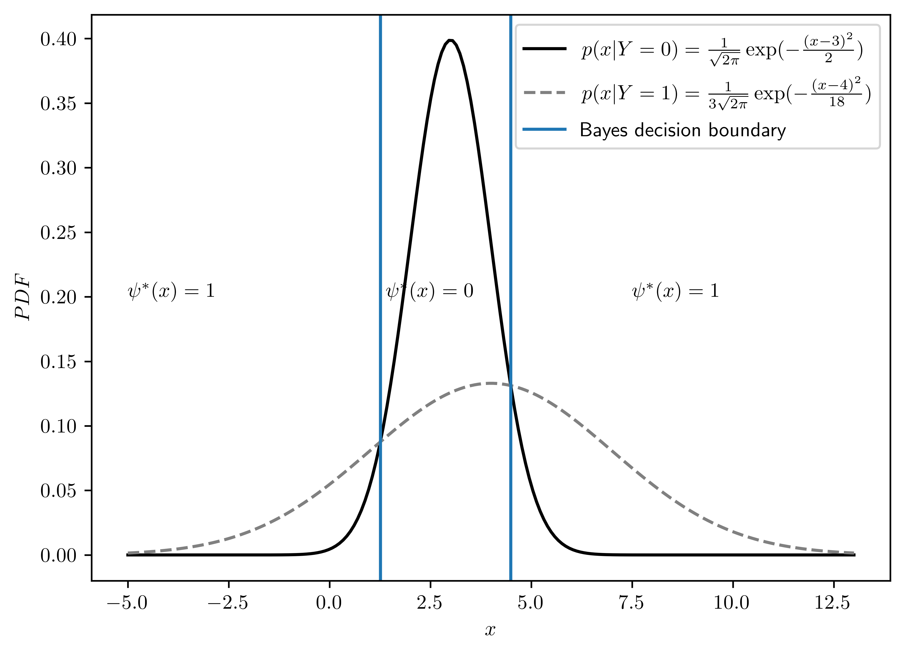
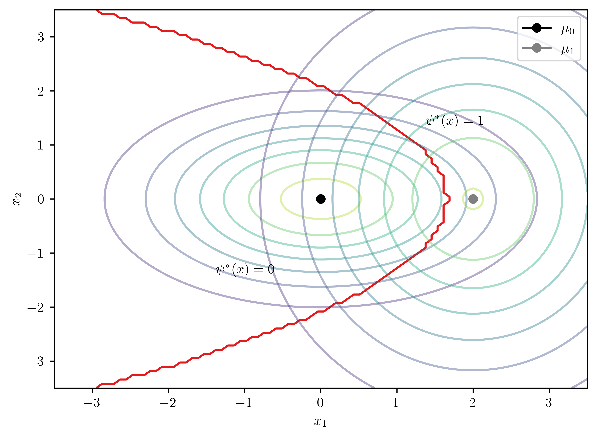
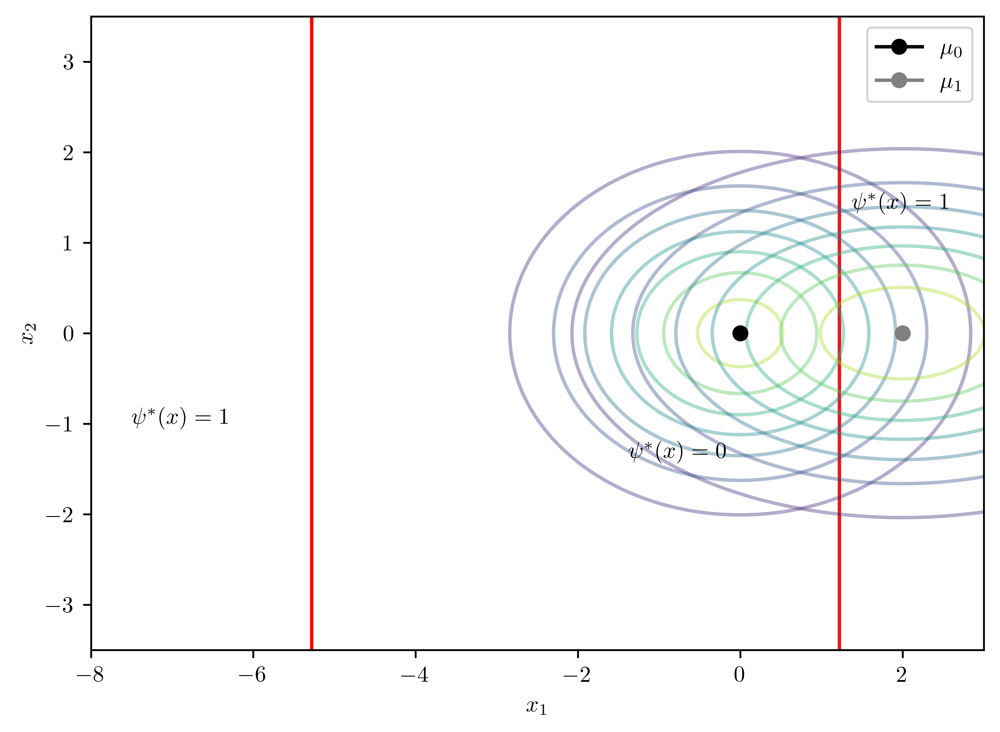
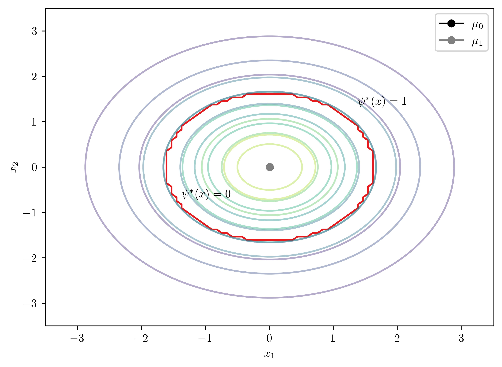
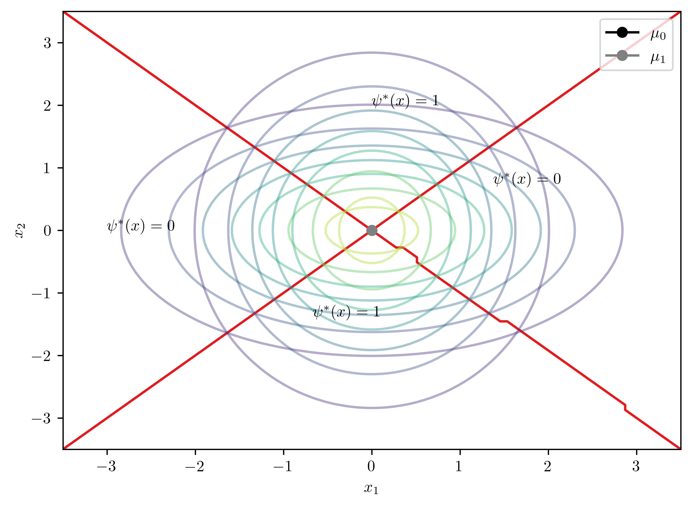
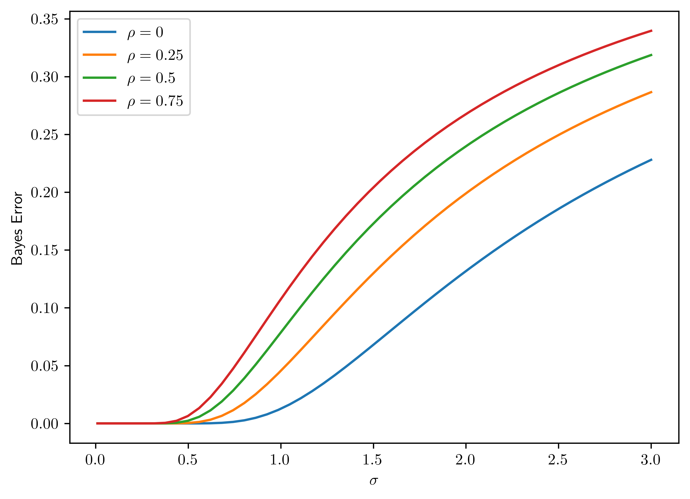
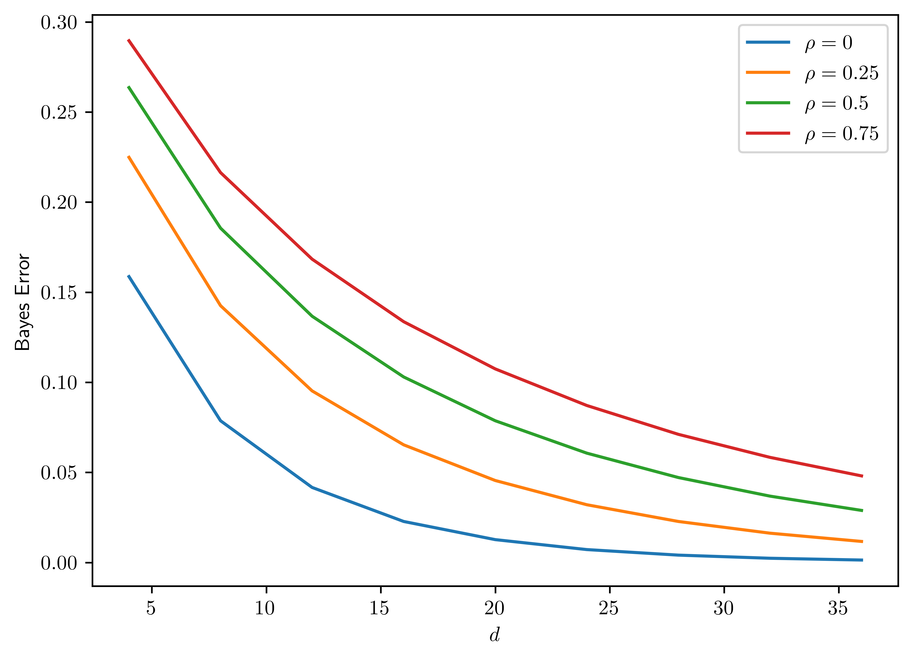
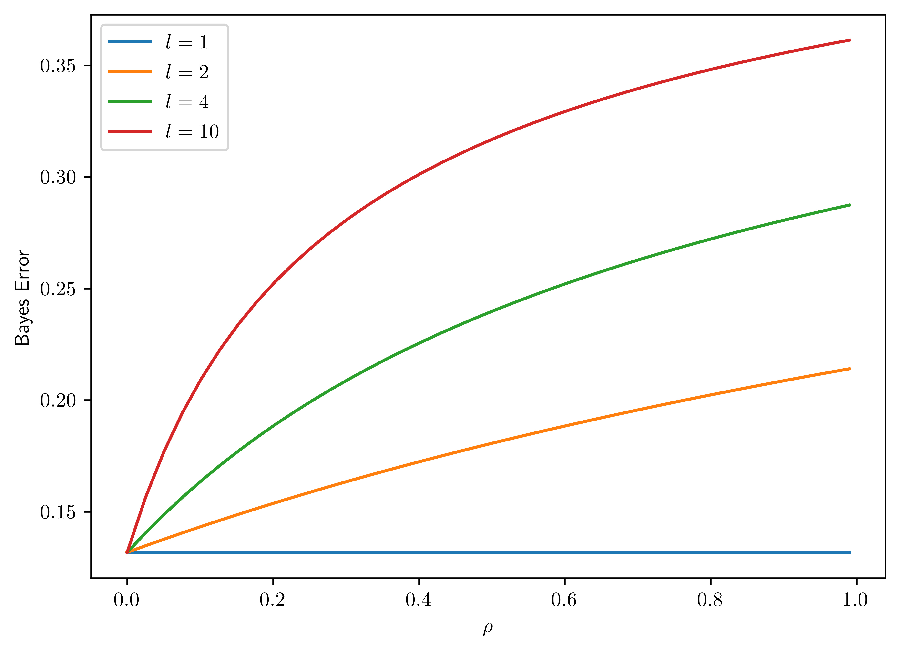

%matplotlib inline
import sys # system information
import matplotlib # plotting
import scipy as st # scientific computing
import pandas as pd # data managing
import numpy as np # numerical comuptation
import scipy.optimize as opt
import sympy as sp
import matplotlib.pyplot as plt
from scipy.special import erf
from numpy.linalg import inv, det
from scipy.linalg import block_diag
from scipy.stats import norm # for problem 2.17 (b)
from scipy.stats import multivariate_normal
# Matplotlib setting
plt.rcParams['text.usetex'] = True
matplotlib.rcParams['figure.dpi']= 300
RES_GRID = 906 Homework 1
6.1 Homework Description
Course: ECEN649, Fall2022
Problems (from Chapter 2 in the book): 2.1 , 2.3 (a,b), 2.4, 2.7, 2.9, 2.17 (a,b)
Note: the book is available electronically on the Evans library website.
- Deadline:
Sept. 26th, 11:59 pm
6.2 Computational Enviromnent Setup
6.2.1 Third-party libraries
6.2.2 Version
print(sys.version)
print(matplotlib.__version__)
print(st.__version__)
print(np.__version__)
print(pd.__version__)3.8.14 (default, Sep 6 2022, 23:26:50)
[Clang 13.1.6 (clang-1316.0.21.2.5)]
3.3.1
1.5.2
1.19.1
1.1.16.3 Problem 2.1
Suppose that \(X\) is a discrete feature vector, with distribution concentrated over a countable set \(D=\{x^{1}, x^2, \dots\}\) in \(R^{d}\). Derive the discrete versions of (2.3), (2.4), (2.8), (2.9), (2.11), (2.30), (2.34), and (2.36)
Hint: Note that if \(X\) has a discrete distribution, then integration becomes summation, \(P(X=x_k)\), for \(x_k\in D\), play the role of \(p(x)\), and \(P(X=x_k | Y=y)\), for \(x_k \in D\), play the role of \(p(x|Y=y)\), for \(y=0,1\).
6.3.1 (2.3)
From Braga-Neto (2020, 16) \[\begin{align} P(X\in E, Y=0) &= \int_E P(Y=0)p(x|Y=0)dx\\ P(X\in E, Y=1) &= \int_E P(Y=1)p(x|Y=1)dx\\ \end{align}\]
Let \(x_k = [x_1,\dots, x_d]\) be the feature vector of \(X\) in set \(D\in R^d\),
\[\begin{align} P(X\in D, Y=0) &= P(X=[x_1,\dots, x_d], Y=0)\\ &= \sum_{X_k\in D} P(Y=0)P(X=[x_1,\dots, x_d] |Y=0)\\ P(X\in D, Y=1) &= P(X=[x_1,\dots, x_d], Y=1)\\ &= \sum_{X_k\in D} P(Y=1)P(X=[x_1,\dots, x_d] |Y=1)\\ \end{align}\]
6.3.2 (2.4)
From Braga-Neto (2020, 17)
\[\begin{align} P(Y=0|X=x_k) &= \frac{P(Y=0)p(X=x_k | Y=0)}{p(X=x_k)}\\ &= \frac{P(Y=0)p(X=x_k |Y=0)}{P(Y=0)p(X=x_k |Y=0) + P(Y=1)p(X=x_k|Y=1)}\\ \end{align}\]
\[\begin{align} P(Y=1|X=x_k) &= \frac{P(Y=1)p(X=x_k | Y=1)}{p(X=x_k)}\\ &= \frac{P(Y=1)p(X=x_k |Y=1)}{P(Y=0)p(X=x_k |Y=0) + P(Y=1)p(X=x_k|Y=1)}\\ \end{align}\]
6.3.3 (2.8)
From Braga-Neto (2020, 18)
\[\epsilon^{0}[\psi] = P(\psi(X)=1 | Y=0) = \sum_{\{x_k|\psi(x_k)=1\}} p(x_k|Y=0)\]
\[\epsilon^{1}[\psi] = P(\psi(X)=0 | Y=1) = \sum_{\{x_k|\psi(x_k)=1\}} p(x_k|Y=1)\]
6.3.4 (2.9)
From Braga-Neto (2020, 18)
\[\epsilon[\psi] = \sum_{\{x_k|\psi(x)=1\}} P(Y=0)p(x_k | Y=0) + \sum_{\{x_k|\psi=0\}}P(Y= 1)p(x_k|Y=1)\]
6.3.5 (2.11)
From Braga-Neto (2020, 19)
\[\epsilon[\psi] = E[\epsilon[\psi|X=x_k]] = \sum_{x_{k}\in D} \epsilon[\psi|X=x_k]p(x_k)\]
6.3.6 (2.30)
From Braga-Neto (2020, 24).
\[\epsilon^{*} = \sum_{x_k\in X} \left[ I_{\eta(X=x_k)\leq 1-\eta(X=x_k)}\eta(X=x_k) + I_{\eta(X=x_k) > 1 - \eta(X=x_k)(1-\eta(X=x_k))}\right] p(X=x_k)\]
6.3.7 (2.34)
From Braga-Neto (2020, 25).
\[\begin{align} \epsilon^{*} &= P(Y=0)\epsilon^{0}[\psi^*] + P(Y=1)\epsilon^1 [\psi^*]\\ &= \sum_{\{x_k|P(Y=1)p(x_k|Y=1)>P(Y=0)p(x_k|Y=0)\}} P(Y=0)p(x_k|Y=0) \\ &+ \sum_{\{x_k|P(Y=1)p(x_k|Y=1)\leq P(Y=0)p(x_k|Y=0)\}} P(Y=1)p(x_k|Y=1) \end{align}\]
6.3.8 (2.36)
From Braga-Neto (2020, 25)
\[E[\eta(X)] = \sum_{x_k\in R^d} P(Y=1|X=x_k)p(x_k) = P(Y=1)\]
6.4 Problem 2.3
This problem seeks to characterize the case \(\epsilon^{*}=0\).
6.4.1 (a)
Prove the “Zero-One Law” for perfect discrimination: \[\epsilon^{*} = 0 \Leftrightarrow \eta(X) = 0 \text{ or } 1 \quad \text{with probability } 1. \tag{6.1}\]
The optimal Bayes classifier is defined in Braga-Neto (2020, 20). That is
\[\begin{equation} \psi^{*}(x) = \arg\max_{i} P(Y=i|X=x) = \begin{cases} 1, & \eta(x) > \frac{1}{2}\\ 0, & \text{otherwise} \end{cases} \end{equation}\]
Part 1: \(\eta(X)=1\)
\[\eta(X) = E[Y|X=x] = P(Y=1|X=x) = 1\]
\[\because \eta(X)=1>\frac{1}{2} \therefore \psi^{*}(x) = 1\]
\[\begin{align} \epsilon^{*} &= \epsilon[\psi^{*}(X) | X=x]\\ &= I_{\psi^{*}(x) = 0}P(Y=1 | X=x) + I_{\psi^{*}(x) = 1} P(Y=0|X=x)\\ &= \underbrace{I_{\psi^{*}(x) = 0}e}_{=0}\underbrace{\eta(X)}_{=1}+ \underbrace{I_{\psi^{*}(x) = 1}}_{=1} \underbrace{(1-\eta(X))}_{=0}\\ &= 0 \end{align}\]
Part 2: \(\eta(X)=0\)
Similarly,
\[\because \eta(X)=0 \leq \frac{1}{2} \therefore \psi^{*}(x) = 0\]
\[\begin{align} \epsilon^{*} &= \epsilon[\psi^{*}(X) | X=x]\\ &= I_{\psi^{*}(x) = 0}P(Y=1 | X=x) + I_{\psi^{*}(x) = 1} P(Y=0|X=x)\\ &= \underbrace{I_{\psi^{*}(x) = 0}}_{=1}\underbrace{\eta(X)}_{=0}+ \underbrace{I_{\psi^{*}(x) = 1}}_{=0} \underbrace{(1-\eta(X))}_{=1}\\ &= 0 \end{align}\]
In conclusion, both cases shows that \(\epsilon^{*} = 0\).
6.4.2 (b)
Show that
\[\epsilon^{*} = 0 \Leftrightarrow \text{ there is a function } f \text{ s.t. } Y=f(X) \text{ with probability } 1\]
\[\begin{equation} \eta(X) = Pr(Y=1 | X=x) = \begin{cases} 1, & f(X)=1\\ 0, & f(X)=0 \end{cases} \end{equation}\]
The sceneraio is same as Problem 3.7 (a).
- Given \(\eta(X) = 1\)
- \(\epsilon^{*} = 0\)
- Given \(\eta(X) = 0\)
- \(\epsilon^{*} = 0\)
\(\epsilon^{*} =0\) for both cases.
6.5 Problem 2.4
This problem concerns the extension to the multiple-class case of some of the concepts derived in this chapter. Let \(Y\in \{0,1,\dots,c-1\}\), where \(c\) is the number of classes, and let \[\eta_{i}(x) = P(Y=i|X=x), \quad i=0,1,\dots, c-1,\]
for each \(x\in R^d\). We need to remember that these probabilities are not indpendent, but satisfy \(\eta_0(x) + \eta_1(x)+\dots+\eta_{c-1}(x) = 1\), for each \(x\in R^{d}\), so that one of the functions is redundant. In the two-class case, this is made explicit by using a single \(\eta(x)\), but using the redundant set above proves advantageous in the multiple-class case, as seen below.
Hint: you should answer the following items in sequence, using the previous answers in the solution of the following ones
6.5.1 (a)
Given a classifier \(\psi: R^d \rightarrow \{0,1,\dots, c-1\}\), show that its conditional error \(P(\psi(X)\neq Y|X=x)\) is given by
\[P(\psi(X)\neq Y|X=x) = 1-\sum^{c-1}_{i=1} I_{\psi(x)=i}\eta_{i}(x) = 1 - \eta_{\psi(x)}(x) \tag{6.2}\]
Use the “Law of Total Probability” (Braga-Neto 2020, sec. A.53),
\[P(\psi(X) = Y| X=x) + P(\psi(X)\neq Y| X=x) = 1 \tag{6.3}\]
\(\therefore\) We can derive the probability of error via
\[\begin{align} P(\psi(X)\neq Y| X=x) &= 1 - P(\psi(X) = Y| X=x)\\ &= 1 - \sum_{i=0}^{c-1}P(\psi(x)=i, Y=i | X=x)\\ &= 1 - \sum_{i=0}^{c-1}I_{\psi(x)=i}P(Y=i | X=x)\\ &= 1 - \sum_{i=0}^{c-1}I_{\psi(x)=i}\eta_i(x) \end{align}\]
Combining together, Equation 6.3 implies Equation 6.2.
6.5.2 (b)
Assuming that \(X\) has a density, show that the classification error of \(\psi\) is given by
\[\epsilon = 1 - \sum_{i=0}^{c-1} \int_{\{x|\psi(x)=i\}}\eta_i(x)p(x)dx.\]
Let \(\{x|\psi(x) = i\}\) be the set of \(\psi(x) = i\) in \(X\).
Use the multiplication rule (Braga-Neto 2020, sec. A1.3)
\[\begin{align} \epsilon &= E[\epsilon[\psi(x) | X=x]]\\ &= 1 - \int_{R^d} P(\psi(X) = Y| X=x) p(x) dx\\ &= 1 - \sum_{i=0}^{c-1} \int_{R^d} p(\psi(X)=i, Y=i| X=x) p(x) dx\\ &= 1 - \sum_{i=0}^{c-1} \int_{R^d} \underbrace{p(\psi(X)=i| X=x)}_{=1 \text{ if } \{x|\psi(x) = i\}; 0, \text{ otherwise.}}p(Y=i|X=x) p(x) dx\\ & = 1 - \sum_{i=0}^{c-1} \int_{\{x|\psi(x) = i\}} 1\cdot p(Y=i|X=x) p(x) dx\\ & = 1 - \sum_{i=0}^{c-1} \int_{\{x|\psi(x) = i\}} p(Y=i|X=x) p(x) dx \end{align}\]
6.5.3 (c)
Prove that the Bayes classifier is given by
\[\psi^{*}(x) = \arg\max_{i=0,1,\dots, c-1} \eta_{i}(x), \quad x\in R^d \tag{6.4}\]
Hint: Start by considering the difference between conditional expected errors \(P(\psi(X)\neq Y|X=x) - P(\psi^{*}(X)\neq Y|X=x)\).
According to Braga-Neto (2020, 20), a Bayes classifier (\(\psi^{*}\)) is defined as
\[\psi^{*} = \arg\min_{\psi\in \mathcal{C}} P(\psi(X) \neq Y)\]
over the set \(\mathcal{C}\) of all classifiers. We need to show that the error of any \(\psi\in \mathcal{C}\) has the conditional error rate:
\[\epsilon[\psi | X=x] \geq \epsilon[\psi^{*} | X=x], \quad \text{ for all } x\in R^d \tag{6.5}\]
From Equation 6.2, classifiers have the error rates:
\[\begin{align} P(\psi^{*}(X)\neq |X=x) &= 1 - \sum_{i=1}^{c-1} I_{\psi^{*}(x)=i}\eta_i(x)\\ P(\psi(X)\neq |X=x) &= 1 - \sum_{i=1}^{c-1} I_{\psi(x)=i}\eta_i(x) \end{align}\]
Therefore,
\[\begin{align} P(\psi(X)\neq Y|X=x) - P(\psi^{*}(X)\neq Y|X=x) &= (1 - \sum_{i=1}^{c-1} I_{\psi(x)=i}\eta_i(x)) - (1 - \sum_{i=1}^{c-1} I_{\psi^{*}(x)=i}\eta_i(x))\\ &= \sum_{i=1}^{c-1} (I_{\psi^{*}(x)=i} - I_{\psi(x)=i})\eta_i(x) \end{align}\]
\(\because\)
- \(I_{\psi^{*}(x)=i^{*}} = 1\) when \(i^{*}\) satisfies \(\eta_{i^{*}}(x) = \max_{i=0,1,\dots,c-1}\eta(x) = \eta_{\max}(x)\)
- \(I_{\psi(x)=i'}=1\) when \(\psi(x) = i'\) for \(i'\in 0,1,\dots, c-1\)
\(\therefore\)
if \(i^* \neq i'\)
\[\begin{align} P(\psi(X)\neq Y|X=x) - P(\psi^{*}(X)\neq Y|X=x) &= (1-0)\eta_{i^{*}}(x) + (0-1)\eta_{i'}(x)\\ &= \eta_{i^{*}}(x) - \eta_{i'}(x)\\ &= \eta_{\max}(x) - \eta_{i'}(x)\\ &\geq 0 \end{align}\]
if \(i^* = i'\)
\[P(\psi(X)\neq Y|X=x) - P(\psi^{*}(X)\neq Y|X=x) = \eta_{i^{*}}(x) - \eta_{i'}(x)=0\]
Therefore, there is no classifier \(\psi\in \mathcal{C}\) can have conditional error rate lower than Bayes classifier Equation 6.4.
6.5.4 (d)
Show that the Bayes error is given by
\[\epsilon^{*} = 1 - E[\max_{i=0,1,\dots, c-1} \eta_{i}(X)]\]
From Problem 2.4.b,
- Noted that, \(\{x|\psi^{*}(x)=i\} = \emptyset \text{ if } i\neq i^{*}\)
\[\begin{align} \epsilon[\psi^{*}] &= E[\epsilon[\psi^{*}(x)|X=x]]\\ &= 1 - \sum_{i=0}^{c-1} \int_{\{x|\psi^{*}(x)=i\}}\eta_i(x)p(x)dx\\ &= 1 - \int_{\{x|\psi^{*}(x)=i^*\}}\eta_{\max}(x)p(x)dx\\ &= 1 - E[\eta_{\max}(x)] \end{align}\]
6.5.5 (e)
Show that the maximum Bayes error possible is \(1-\frac{1}{c}\).
\[\max \epsilon[\psi^{*}] = 1 - \min E[\max_{i=0,1,\dots,c-1} \eta_i(X)] \tag{6.6}\]
also,
given
\[\eta_1(x) = \eta_2(x) = \dots = \eta_{c-1}(x)\]
\[\sum_{i=1}^{c-1} \eta_i(x) = 1\]
we can get that \[\min\max\eta(X) = \frac{1}{c} \tag{6.7}\]
Combining Equation 6.6 and Equation 6.7 together, the maximum Bayes error is \(1-\frac{1}{c}\)
6.6 Problem 2.7
Consider the following univariate Gaussian class-conditional densities:
\[p(x|Y=0) = \frac{1}{\sqrt{2\pi}}\exp(-\frac{(x-3)^2}{2}) \tag{6.8}\] \[p(x|Y=1)=\frac{1}{3\sqrt{2\pi}}\exp(-\frac{(x-4)^2}{18}) \tag{6.9}\] Assume that the classes are equally likely, i.e., \(P(Y=0)=P(Y=1)=\frac{1}{2}\)
The PDF of Guasssian distribution is1
\[f(x) = \frac{1}{\sigma\sqrt{2\pi}}\exp(- \frac{(x-\mu)^2}{2\sigma^2})\]
| Parameters | Values | |
|---|---|---|
| 0 | $$\mu_0$$ | 3 |
| 1 | $$\mu_1$$ | 4 |
| 2 | $$\sigma_0$$ | 1 |
| 3 | $$\sigma_1$$ | 3 |
6.6.1 (a)
Draw the densities and determine the Bayes classifier graphically.
- The plot is dispayed in Figure 6.1.
- The decision bounding was determined by the right intersection of both distributions. I applied Brent’s method to find the intersection2.
- Intuitively, the intersection on the right has the minimum \(\epsilon^0\) to the right and \(\epsilon^1\) to the left.
class Gauss:
def __init__(self, scale, mean, var):
self.scale = scale
self.mean = mean
self.var = var
def pdf(self, x):
return 1/(self.scale*np.sqrt(2*np.pi))*np.exp(-1*(x-self.mean)**2/self.var)
def plot(self, ax, x_bound=[-5,13], nticks=200, **args):
xs = np.linspace(x_bound[0], x_bound[1], nticks)
ps = [self.pdf(x) for x in xs]
ax.plot(xs, ps, **args)
g0 = Gauss(1,3,2)
g1 = Gauss(3,4,18)
## Boundaries
dec_x = [1.26, 4.49] # see problem 2.7 (b) for derivation
## Plotting
fig, ax = plt.subplots()
g0.plot(ax, color="black",label="$p(x|Y=0) = \\frac{1}{\\sqrt{2\\pi}}\\exp(-\\frac{(x-3)^2}{2})$")
g1.plot(ax, color="gray",linestyle="--",label="$p(x|Y=1)=\\frac{1}{3\\sqrt{2\\pi}}\exp(-\\frac{(x-4)^2}{18})$")
ax.axvline(x=dec_x[0], label="Bayes decision boundary")
ax.axvline(x=dec_x[1])
ax.set_xlabel("$x$")
ax.set_ylabel("$PDF$")
ax.annotate("$\psi^{*}(x)=1$", (7.5,0.2))
ax.annotate("$\psi^{*}(x)=1$", (-5,0.2))
ax.annotate("$\psi^{*}(x)=0$", (1.4,0.2))
ax.legend(loc="upper right");
6.6.2 (b)
Determine the Bayes classifier.
According to Braga-Neto (2020, 22), the Bayes classifier can be defined by
\[\begin{equation} \psi^{*}(x) = \begin{cases} 1, & D^{*}(x) > k^*\\ 0, & \text{otherwise} \end{cases} \end{equation}\]
where \(D^*(x) = \ln \frac{p(x|Y=1)}{p(x|Y=0)}\), \(k^* = \ln \frac{P(Y=0)}{P(Y=1)}\). Now, take Equation 6.8 and Equation 6.9 into the forumula.
\[k^{*} = \ln \frac{1}{1} = 0\]
\[\begin{align} D^*(x) &= \ln \frac{p(x|Y=1)}{p(x|Y=0)}\\ &= -\ln \frac{\frac{1}{\sqrt{2\pi}}\exp(-\frac{(x-3)^2}{2})}{\frac{1}{3\sqrt{2\pi}}\exp(-\frac{(x-4)^2}{18})}\\ &= -\ln \left[ 3 \cdot \exp(-\frac{(x-3)^2}{2} + \frac{(x-4)^2}{18}) \right]\\ &= -\ln 3 +\frac{(x-3)^2}{2} - \frac{(x-4)^2}{18}\\ &= \frac{4}{9}x^2 - \frac{23}{9}x - (\ln(3) + \frac{65}{18}) \end{align}\]
Thus, the Bayes classifier for distinguishing Equation 6.8 and Equation 6.9 is
\[\begin{equation} \psi^{*}(x) = \begin{cases} 1, & \frac{4}{9}x^2 - \frac{23}{9}x - (\ln(3) + \frac{65}{18})> 0\\ 0, & \text{otherwise} \end{cases} \end{equation}\]
with the boundaries
\[\begin{equation} x = \begin{cases} \frac{1}{8}(23-3\sqrt{1+16\ln(3)}) &\approx 1.26\\ \frac{1}{8}(23+3\sqrt{1+16\ln(3)}) &\approx 4.49 \end{cases} \end{equation}\]
Noted that there are two boundaries for \(D^*(x) = 0\) becasue \(D^*(x)\) is a second order equation of \(x\).
\[\begin{align} \psi^{*}(x) &= \begin{cases} 1, & \left[ x- (\frac{1}{8}(23-3\sqrt{1+16\ln(3)}))\right]\left[ x-(\frac{1}{8}(23+3\sqrt{1+16\ln(3)}))\right]> 0\\ 0, & \text{otherwise} \end{cases}\\ &=\begin{cases} 1, x < (\frac{1}{8}(23-3\sqrt{1+16\ln(3)})) \lor x>(\frac{1}{8}(23+3\sqrt{1+16\ln(3)}))\\ 0, \text{ otherwise } \end{cases}\\ &\approx \begin{cases} 1, x < 1.26 \lor x> 4.49\\ 0, \text{ otherwise } \end{cases} \end{align}\]
6.6.3 (c)
Determine the specificity and sensitivity of the Bayes classifier.
Hint: use the standard Gaussian CDF \(\psi(x)\)
Let left and right boundaries be \(\frac{1}{8}(23-3\sqrt{1+16\ln(3)}) = b_1\) and \(\frac{1}{8}(23+3\sqrt{1+16\ln(3)})= b_2\),
| Sensitivity | Specificity |
|---|---|
| \(1-\epsilon^1[\psi]\) | \(1-\epsilon^0[\psi]\) |
The standard normal CDF is3. Use the definition of \(\epsilon^{0}[\psi]\) and \(\epsilon^{1}[\psi]\) in Braga-Neto (2020, 18)
\[F(x) = p(X<x) = \frac{1}{2}\left[ 1 + erf(\frac{x-\mu}{\sigma\sqrt{2}})\right]\]
\[\begin{align} \epsilon^{0}[\psi^{*}(x)] &= P(\psi(X) = 1 | Y=0)\\ &= \int_{\{x|\psi(x)= 1\}}p(x|Y=0)dx\\ &= \int_{-\infty}^{b_1} p(x|Y=0)dx + \int_{b_2}^{\infty} p(x|Y=0)dx\\ &= F_{X_0}(b_1) + 1 - F_{X_0}(b_2)\\ &= \frac{1}{2}[1+erf(\frac{b_1-\mu_0}{\sigma_0\sqrt{2}})] + 1 - \frac{1}{2}[1+erf(\frac{b_2-\mu_0}{\sigma_0\sqrt{2}})]\\ &= \underline{1 + \frac{1}{2}(erf(\frac{b_1-\mu_0}{\sigma_0\sqrt{2}}) - erf(\frac{b_2-\mu_0}{\sigma_0\sqrt{2}}))} \end{align}\]
\[\begin{align} \epsilon^{1}[\psi^{*}(x)] &= P(\psi(X) = 0 | Y=1)\\ &= \int_{\{x|\psi(x)= 0\}}p(x|Y=1)dx\\ &= \int_{b_1}^{b_2} p(x|Y=1)dx\\ &= F_{X_1}(b_2) - F_{X_1}(b1)\\ &= \underline{\frac{1}{2}\left[ erf(\frac{b_2 - \mu_1}{\sigma_1 \sqrt{2}}) - erf(\frac{b_1 - \mu_1}{\sigma_1 \sqrt{2}}) \right]}\\ \end{align}\]
The exact values of error estimation are shown in Table 6.3 (epsilon_0 is \(\epsilon_0\), and epsilon_1 \(\epsilon_1\)). Specificity and sensitivity are calculated with their definitions shown in Table 6.2,
# Calculation of error statistics
def nerf(b, mu, std):
return erf( (b - mu) / (std*np.sqrt(2)))
b1 = (1/8)*(23-3*np.sqrt(1+16*np.log(3)))
b2 = (1/8)*(23+3*np.sqrt(1+16*np.log(3)))
e0 = 1 + 0.5*(nerf(b1,mu0, std0) - nerf(b2,mu0, std0))
e1 = 0.5*(nerf(b2,mu1, std1) - nerf(b1, mu1, std1))
sensi = 1 - e1
spec = 1 - e0
bayesError = 0.5*(e0+e1)| Error statistics | Value | |
|---|---|---|
| 0 | epsilon_0 | 0.108752 |
| 1 | epsilon_1 | 0.384628 |
| 2 | Sensitivity | 0.615372 |
| 3 | Specificity | 0.891248 |
| 4 | Overall Bayes error | 0.246690 |
6.6.4 (d)
Determine the overall Bayes error.
Use the derivation in Braga-Neto (2020, 18),
\[\begin{align} \epsilon[\psi^{*}(X)] &= P(\psi(X) \neq Y)\\ &= P(\psi(X)=1, Y=0) + P(\psi(X)=0, Y=1)\\ &= P(Y=0) P(\psi(X)=1 | Y=0) + P(Y=1)P(\psi(X)=0 | Y=1)\\ &= P(Y=0)\epsilon^0 + P(Y=1)\epsilon^1\\ &= \underline{\frac{1}{2}(\epsilon^0 + \epsilon^1)} \end{align}\]
The excat Bayes error is displayed in Table 6.4.
| Error statistics | Value | |
|---|---|---|
| 0 | Overall Bayes error | 0.24669 |
6.7 Problem 2.9
Obtain the optimal decision boundary in the Gaussian model with \(P(Y = 0) = P(Y = 1)\) and
In each case draw the optimal decision boundary, along with the class means and class conditional density contours, indicating the 0- and 1-decision regions.
Since \(\Sigma_0 \neq \Sigma_1\) happens in the following subproblems, these are heteroskedastic cases. As mentioned in Braga-Neto (2020, sec. 2.5.2). The Bayes classifier is
\[\begin{equation} \psi^{*}_{Q}(x) = \begin{cases} 1, x^T A x + b^T x + c > 0\\ 0, \text{ otherwise } \end{cases} \end{equation}\]
where
\[\begin{align} A &= \frac{1}{2}(\Sigma^{-1}_{0} - \Sigma^{-1}_{1})\\ b &= \Sigma^{-1}_{1} \mu_1 - \Sigma^{-1}_{0}\mu_0\\ c &= \frac{1}{2}(\mu^{T}_{0}\Sigma_{0}^{-1}\mu_0 - \mu_{1}^{T}\Sigma^{-1}_{1}\mu_1) + \frac{1}{2}\ln\frac{\det(\Sigma_0)}{\det(\Sigma_1)} + \ln \frac{P(Y=1)}{P(Y=0)} \end{align}\]
Let \(x\) be the vector of sample values,
\[\begin{align} x = \begin{bmatrix} x_0\\ x_1 \end{bmatrix} \end{align}\]
The following is the Python implementation with NumPy4 5.
def compose(U,D):
return U.transpose()@inv(D)@U
def mA(sigma0, sigma1):
sigma0_inv = inv(sigma0)
sigma1_inv = inv(sigma1)
return 0.5*(sigma0_inv - sigma1_inv)
def mb(sigma0, sigma1, mu0, mu1):
sigma0_inv = inv(sigma0)
sigma1_inv = inv(sigma1)
return sigma1_inv@mu1 - sigma0_inv@mu0
def mc(sigma0, sigma1, mu0, mu1, Py):
return 0.5*(compose(mu0, sigma0) - compose(mu1, sigma1)) +\
0.5*np.log(det(sigma0)/det(sigma1)) +\
np.log(Py/(1-Py))
def BayesBound(x, sigma0, sigma1, mu0, mu1, Py):
xax = x.transpose() @ mA(sigma0, sigma1)@x
bx = mb(sigma0, sigma1, mu0, mu1).transpose() @ x
c = mc(sigma0, sigma1, mu0, mu1, Py)
return float(xax + bx + c)
class GaussianBayesClassifier:
def __init__(self, sigma0, sigma1, mu0, mu1, Py):
self.sigma0 = sigma0
self.sigma1 = sigma1
self.mu0 = mu0
self.mu1 = mu1
self.Py = Py
# Inferred Matrix
self.mA = mA(sigma0, sigma1)
self.mb = mb(sigma0, sigma1, mu0, mu1)
self.mc = mc(sigma0, sigma1, mu0, mu1, Py)
def BayesBound(self, x):
return BayesBound(x, self.sigma0, self.sigma1, self.mu0, self.mu1, self.Py)
def psi(self, x):
"""
Bayes classification
"""
pred = 0
if self.BayesBound(x) > 0:
pred = 1
return pred
def solveD(self):
x0, x1 = sp.symbols('x0 x1')
x = sp.Matrix([[x0],[x1]])
return sp.simplify(x.T * bc.mA * x + bc.mb.T * x + bc.mc)
def plot2D(self, psi_annotates=[[0.3,0.3], [0.7,0.7]]):
fig, ax = plt.subplots()
# Create girds
xlist = np.linspace(-3.5,3.5,RES_GRID)
ylist = np.linspace(-3.5,3.5,RES_GRID)
X, Y = np.meshgrid(xlist, ylist)
pos = np.dstack((X,Y))
# Compute Bayes classification
Z = np.zeros(X.shape)
for i in range(0, Z.shape[0]):
for j in range(0, Z.shape[1]):
x = np.matrix([X[i,j], Y[i,j]]).T
Z[i,j] = self.psi(x)
# Compute Gaussia pdf
rv0 = multivariate_normal(np.array(self.mu0.T)[0], self.sigma0)
rv1 = multivariate_normal(np.array(self.mu1.T)[0], self.sigma1)
Z0 = rv0.pdf(pos)
Z1 = rv1.pdf(pos)
# Plot contours
cmap = plt.get_cmap('Set1', 2)
ax.contour(X,Y,Z, cmap=cmap, levels=[0])
ax.contour(X,Y,Z0, alpha=0.4)
ax.contour(X,Y,Z1, alpha=0.4)
ax.plot(self.mu0[0,0], self.mu0[1,0], marker="o", color="k",label="$\mu_0$")
ax.plot(self.mu1[0,0], self.mu1[1,0], marker="o", color="gray",label="$\mu_1$")
if psi_annotates==None:
psi_annotates = [[self.mu0[0,0], self.mu0[1,0]],[self.mu1[0,0], self.mu1[1,0]]]
# Annotate decisions
for ann in psi_annotates:
i = X[int(X.shape[0]*ann[0]), int(X.shape[1]*ann[1])]
j = Y[int(Y.shape[0]*ann[0]), int(Y.shape[1]*ann[1])]
x = np.matrix([i, j]).T
if self.psi(x) > 0:
ax.annotate("$\psi^{*}(x) = 1$", (i, j))
else:
ax.annotate("$\psi^{*}(x) = 0$", (i, j))
# legend and label settings
ax.set_xlabel("$x_1$")
ax.set_ylabel("$x_2$")
ax.legend()
return fig, ax6.7.1 (a)
\[\begin{equation*} \mu_0 =(0,0)^T, \mu_1=(2,0)^T, \Sigma_0 = \begin{pmatrix} 2 & 0 \\ 0 & 1 \end{pmatrix}, \Sigma_1 = \begin{pmatrix} 2 & 0 \\ 0 & 4 \end{pmatrix} \end{equation*}\]
bc = GaussianBayesClassifier(np.matrix([[2,0],[0,1]]),\
np.matrix([[2,0],[0,4]]),\
np.matrix([0,0]).T,\
np.matrix([2,0]).T, 0.5)
bc.plot2D()
print(bc.solveD())UserWarning: No contour levels were found within the data range.
ax.contour(X,Y,Z, cmap=cmap, levels=[0])Matrix([[1.0*x0 + 0.375*x1**2 - 1.69314718055995]])
- The boundary is
\[D(x) = x_{0} + 0.375*x_{1}^{2} - 1.69 = 0\]
6.7.2 (b)
\[\begin{equation*} \mu_0 =(0,0)^T, \mu_1=(2,0)^T, \Sigma_0 = \begin{pmatrix} 2 & 0 \\ 0 & 1 \end{pmatrix}, \Sigma_1 = \begin{pmatrix} 4 & 0 \\ 0 & 1 \end{pmatrix} \end{equation*}\]
bc = GaussianBayesClassifier(np.matrix([[2,0],[0,1]]),\
np.matrix([[4,0],[0,1]]),\
np.matrix([0,0]).T,np.matrix([2,0]).T,\
0.5)fig, ax = bc.plot2D()
ax.annotate("$\psi^{*}(x) = 1$", (-7.5, -1))
ax.set_xlim(-8,3)
ax.axvline(x=-5.28216220230503, color="red")
print(bc.solveD())UserWarning: No contour levels were found within the data range.
ax.contour(X,Y,Z, cmap=cmap, levels=[0])Matrix([[0.125*x0**2 + 0.5*x0 - 0.846573590279973]])
- Analytical solution to the boundary \[D(x) = 0.125*x_{0}^{2} + 0.5*x_{0} - 0.85 = 0\]
- \(x=-5.28, 1.28\) The solution are two vertical lines.
6.7.3 (c)
\[\begin{equation*} \mu_0 =(0,0)^T, \mu_1=(0,0)^T, \Sigma_0 = \begin{pmatrix} 1 & 0 \\ 0 & 1 \end{pmatrix}, \Sigma_1 = \begin{pmatrix} 2 & 0 \\ 0 & 2 \end{pmatrix} \end{equation*}\]
bc = GaussianBayesClassifier(np.matrix([[1,0],[0,1]]),\
np.matrix([[2,0],[0,2]]),\
np.matrix([0,0]).T,\
np.matrix([0,0]).T,\
0.5)
bc.plot2D(psi_annotates= [[0.4,0.3], [0.7,0.7]])
print(bc.solveD())UserWarning: No contour levels were found within the data range.
ax.contour(X,Y,Z, cmap=cmap, levels=[0])Matrix([[0.25*x0**2 + 0.25*x1**2 - 0.693147180559945]])
- Analytical solution to the boundary \[D(x) =0.25*x_{0}^{2} + 0.25*x_1^{2} - 0.69 = 0\]
The solution is a circle.
6.7.4 (d)
\[\begin{equation*} \mu_0 =(0,0)^T, \mu_1=(0,0)^T, \Sigma_0 = \begin{pmatrix} 2 & 0 \\ 0 & 1 \end{pmatrix}, \Sigma_1 = \begin{pmatrix} 1 & 0 \\ 0 & 2 \end{pmatrix} \end{equation*}\]
bc = GaussianBayesClassifier(np.matrix([[2,0],[0,1]]),\
np.matrix([[1,0],[0,2]]),\
np.matrix([0,0]).T,\
np.matrix([0,0]).T,\
0.5)
fig, ax = bc.plot2D(psi_annotates= [[0.3,0.4], [0.6,0.7]])
ax.annotate("$\psi^{*}(x) = 1$", (0, 2))
ax.annotate("$\psi^{*}(x) = 0$", (-3, 0))
print(bc.solveD())UserWarning: No contour levels were found within the data range.
ax.contour(X,Y,Z, cmap=cmap, levels=[0])Matrix([[-0.25*x0**2 + 0.25*x1**2]])
Analytical solution to the boundary \[D(x) = -0.25x_{0}^{2} + 0.25*x_{1}^{2} = 0\]
Noted that \(D([0,0]^T) = 0\), then \(\phi^{*}([0,0]^T)=0\) for the origin.
6.8 Python Assignment: Problem 2.17
This problem concerns the Gaussian model for synthetic data generation in Braga-Neto (2020, sec. A8.1).
6.8.1 (a)
Derive a general expression for the Bayes error for the homoskedastic case with \(\mu_0 = (0,\dots,0), \mu_1=(1,\dots,1)\), and \(P(Y=0)=P(Y=1)\). Your answer should be in terms of \(k, \sigma^{2}_{1}, \dots, \sigma^{2}_{k}, l_1, \dots, l_k,\) and \(\rho_{1},\dots, \rho_k\).
Hint: Use the fact that
\[\begin{equation} \begin{bmatrix} 1 & \sigma & \cdots & \sigma\\ \sigma & 1 & \cdots & \sigma\\ \vdots & \vdots & \ddots & \vdots\\ \sigma & \sigma & \cdots & 1 \end{bmatrix}^{-1}_{l\times l} = \frac{1}{(1-\sigma)(1+(l-1)\sigma)} \begin{bmatrix} 1+(l-2)\sigma & -\sigma \cdots & -\sigma\\ -\sigma & 1+(l-2)\sigma & \cdots &-\sigma\\ \vdots & \vdots & \ddots & \vdots\\ -\sigma & -\sigma & \cdots & 1+(l-2) & \sigma \end{bmatrix} \end{equation}\]
Use Equation 2.53 in Braga-Neto (2020, 31). Given \(P(Y=0)=P(Y=1)=0.5\), then
\[\begin{equation} \epsilon_{L}^{*} = \Phi(- \frac{\delta}{2}) \end{equation}\]
where \(\delta = \sqrt{(\mu_1 - \mu_0)^T \Sigma^{-1}(\mu_1 - \mu0)}\).
\[\begin{equation} \Sigma_{d\times d} = \begin{bmatrix} \Sigma_{l_1 \times l_1}(\sigma^{2}_{1}, \rho_{1}) & 0 & \cdots & 0\\ 0 & \Sigma_{l_2 \times l_2}(\sigma^{2}_{2}, \rho_{2}) & \cdots & 0\\ \vdots & \vdots & \ddots & \vdots\\ 0 & 0 & \cdots & \Sigma_{l_k \times l_k}(\sigma^{2}_{k}, \rho_{k}) \end{bmatrix} \end{equation}\]
where \(l_1 + \cdots + l_k = d\).
\[\begin{align} \Sigma_{l_k \times l_k}(\sigma^{2}_{i}, \rho_{i}) &= \sigma^2_{i} \begin{bmatrix} 1 & \rho_i & \cdots & \rho_i \\ \rho_i & 1 & \cdots & \rho_i \\ \vdots & \vdots & \ddots & \vdots\\ \rho_i & \rho_i & \cdots & 1 \end{bmatrix}\\ % % \Sigma^{-1}_{l_k \times l_k}(\sigma^{2}_{i}, \rho_{i}) &= \frac{1}{\sigma_{i}^{2}(1-\rho_i)(1+(l_k - 1)\rho_i)} \begin{bmatrix} 1 + (l_k - 2)\rho_i & -\rho_i & \cdots & -\rho_i\\ -\rho_i & 1 + (l_k - 2)\rho_i & \cdots & -\rho_i\\ \vdots & \vdots & \ddots & \vdots\\ -\rho_i & -\rho_i & \cdots & 1 + (l_k - 2)\rho_i\\ \end{bmatrix}\\ &= \begin{bmatrix} \frac{1 + (l_k - 2)\rho_i}{\sigma_{i}^{2}(1-\rho_i)(1+(l_k - 1)\rho_i)}& \frac{-\rho_i}{\sigma_{i}^{2}(1-\rho_i)(1+(l_k - 1)\rho_i)} & \cdots & \frac{-\rho_i}{\sigma_{i}^{2}(1-\rho_i)(1+(l_k - 1)\rho_i)}\\ \frac{-\rho_i}{\sigma_{i}^{2}(1-\rho_i)(1+(l_k - 1)\rho_i)} & \frac{1 + (l_k - 2)\rho_i}{\sigma_{i}^{2}(1-\rho_i)(1+(l_k - 1)\rho_i)} & \cdots & \frac{-\rho_i}{\sigma_{i}^{2}(1-\rho_i)(1+(l_k - 1)\rho_i)}\\ \vdots & \vdots & \ddots & \vdots\\ \frac{-\rho_i}{\sigma_{i}^{2}(1-\rho_i)(1+(l_k - 1)\rho_i)} & \cdots & \frac{-\rho_i}{\sigma_{i}^{2}(1-\rho_i)(1+(l_k - 1)\rho_i)} & \frac{1 + (l_k - 2)\rho_i}{\sigma_{i}^{2}(1-\rho_i)(1+(l_k - 1)\rho_i)}\label{eq:inv}\\ \end{bmatrix} \end{align}\]
The element-wised summation of all terms in \(\Sigma_{l_k \times l_k}(\sigma^{2}_{i}, \rho_{i})\) is
\[\begin{align} sum(\Sigma_{l_k \times l_k}(\sigma^{2}_{k}, \rho_{k})) &= \frac{1}{\sigma_{i}^{2}(1-\rho_k)(1+(l_k - 1)\rho_k)}(- l_{k}^{2}\rho_k + l_k(1+(l_k-1)\rho_k))\\ & = \frac{l_k(1-\rho_k)}{\sigma_{k}^{2}(1-\rho_k)(1+(l_k - 1)\rho_k)} \end{align}\]
Thus, the inverse of covariance matrix is
\[\begin{equation} \Sigma^{-1}_{d\times d} = \begin{bmatrix} \Sigma^{-1}_{l_1 \times l_1}(\sigma^{2}_{1}, \rho_{1}) & 0 & \cdots & 0\\ 0 & \Sigma^{-1}_{l_2 \times l_2}(\sigma^{2}_{2}, \rho_{2}) & \cdots & 0\\ \vdots & \vdots & \ddots & \vdots\\ 0 & 0 & \cdots & \Sigma^{-1}_{l_k \times l_k}(\sigma^{2}_{k}, \rho_{k}) \end{bmatrix} \end{equation}\]
Combining together,
\[\begin{align} \epsilon^{*}_{L} = \Phi(\frac{-1}{2}\delta) &= \Phi\left(\frac{-1}{2}\sqrt{(\mu_1 - \mu_0)^T \Sigma^{-1}(\mu_1 - \mu_0)}\right)\\ &= \Phi\left(\frac{-1}{2}\sqrt{% \underbrace{% \begin{bmatrix} 1 & \cdots & 1 \end{bmatrix} }_{1\times d}% \underbrace{ \begin{bmatrix} \Sigma^{-1}_{l_1 \times l_1}(\sigma^{2}_{1}, \rho_{1}) & 0 & \cdots & 0\\ 0 & \Sigma^{-1}_{l_2 \times l_2}(\sigma^{2}_{2}, \rho_{2}) & \cdots & 0\\ \vdots & \vdots & \ddots & \vdots\\ 0 & 0 & \cdots & \Sigma^{-1}_{l_k \times l_k}(\sigma^{2}_{k}, \rho_{k}) \end{bmatrix} }_{d\times d}% \underbrace{% \begin{bmatrix} 1 \\ \vdots\\ 1 \end{bmatrix} }_{d \times 1} }\right)\\ &= \Phi\left( \sum_{i=1}^{k}\frac{l_i(1-\rho_i)}{\sigma_{i}^{2}(1-\rho_i)(1+(l_i - 1)\rho_i)} \right) \end{align}\]
6.8.2 (b)
Specialize the previous formula for equal-sized blocks \(l_1 = \cdots = l_k = l\) with equal correlations \(\rho_1 = \cdots = \rho_k = \rho\), and constant variance \(\sigma_{1}^{2} = \cdots, \sigma_{k}^{2} = \sigma^2\). Write the resulting formula in terms of \(d,l,\sigma\) and \(\rho\).
6.8.2.1 i.
Using the python function
norm.cdfin thescipy.statsmodule, plot the Bayes error as a function of \(\sigma\in [0.01,3 ]\) for \(d=20, l=4\), and four different correlation values \(\rho=0,0.25,0.5,0.75\) (plot one curve for each value). Confirm that the Bayes error increasese monotonically with \(\sigma\) from \(0\) to \(0.5\) for each value of \(\rho\), and that Bayes error for larger \(\rho\) is uniformly larger than that for smaller \(\rho\). The latter fact shows that correlation between the features is detrimental to classification.
As shown in Figure 6.6, the correlation does have the detrimental effect on classification, and monotoniously increases Bayes error.
# Implementation
def get_VecM(length, val):
return np.ones((1, length)).T * val
class GeneralMultiGaussian:
def __init__(self, d, l, sig, rho, Imu0=0, Imu1=1):
self.d = d
self.l = l
self.sig = sig
self.rho = rho
self.Imu0 = Imu0
self.Imu1 = Imu1
self.mu0 = get_VecM(d, Imu0)
self.mu1 = get_VecM(d, Imu1)
# cluster of covariance matrix
self.subCovInv = self.cluster_cov_inv()
self.CovInv = self.cov_inv()
def cluster_cov_inv(self):
sig = self.sig
l = self.l
rho = self.rho
scale = 1/((sig**2)*(1-rho)*(1+(l-1)*rho))
diag_val = 1 + (l-2)*rho
covInv = np.ones((l,l)) * (-1*rho)
covInv = np.matrix(covInv)
np.fill_diagonal(covInv, diag_val)
return scale*covInv
def cov_inv(self):
d = self.d; l = self.l
subMs = [self.subCovInv for i in range(0,int(d/l)+1)]
return block_diag(*subMs)[0:d, 0:d]
def bayesError(self):
mu0 = self.mu0
mu1 = self.mu1
mud = mu1 - mu0
CovInv = self.CovInv
delta = -0.5 * np.sqrt(mud.T @ CovInv @ mud)
return norm.cdf(delta)
# Parameter Setting
sigs = np.linspace(0.01 ,3 , 50)
d = 20
l = 4
rhos = [0, 0.25, 0.5, 0.75]
# Measurement of Bayes errors
errorD = dict()
for rho in rhos:
errorD[rho] = np.zeros(len(sigs))
for rho in errorD.keys():
for (i, sig) in enumerate(sigs):
gm = GeneralMultiGaussian(d, l, sig, rho)
err = gm.bayesError()
errorD[rho][i] = err
# Plotting
fig, ax = plt.subplots()
for rho in rhos:
ax.plot(sigs, errorD[rho], label="$\\rho={}$".format(rho))
ax.set_xlabel("$\\sigma$")
ax.set_ylabel("Bayes Error")
ax.legend();
6.8.2.2 ii.
Plot the Bayes error as a function of \(d=2,4,6,8,\dots, 40\), with fixed block size \(l=4\) and variance \(\sigma^2=1\) and \(\rho=0,0.25,0.5,0.75\) (plot one curve for each value). Confirm that the Bayes error decreases monotonically to \(0\) with increasing dimensionality, with faster convergence for smaller correlation values.
The plot is shown in Figure 6.7.
# Parameter setting
ds = np.arange(4, 40, 4, dtype=int)
l = 4
sig = 1
# Measure errors
errorD2 = dict()
for rho in rhos:
errorD2[rho] = np.zeros(len(ds))
for rho in errorD2.keys():
for (i, d) in enumerate(ds):
gm = GeneralMultiGaussian(d, l, sig, rho)
err = gm.bayesError()
errorD2[rho][i] = err
# Plotting
fig, ax = plt.subplots()
for rho in rhos:
ax.plot(ds, errorD2[rho], label="$\\rho={}$".format(rho))
ax.set_xlabel("$d$")
ax.set_ylabel("Bayes Error")
ax.legend();
6.8.2.3 iii.
Plot the Bayes error as a function of the correlation \(\rho \in [0,1]\) for constant variance \(\sigma^2 =2\) and fixed \(d=20\) with varying block size \(l=1,2,4,10\) (plot one curve for each value). Confirm that the Bayes error increases monotonically with increasing correlation. Notice that the rate of increase is particularly large near \(\rho=0\), which shows that the Bayes error is very sensitive to correlation in the near-independent region.
The plot is show in Figure 6.8.
# Parameter setting
d = 20
ls = [1,2,4,10]
sig = 2
rhos = np.linspace(0.,0.99,40)
# Measure errors
errorD3 = dict()
for l in ls:
errorD3[l] = np.zeros(len(rhos))
for l in ls:
for (i, rho) in enumerate(rhos):
gm = GeneralMultiGaussian(d, l, sig, rho)
err = gm.bayesError()
errorD3[l][i] = err
# Plotting
fig, ax = plt.subplots()
for l in ls:
ax.plot(rhos, errorD3[l], label="$\\l={}$".format(l))
ax.set_xlabel("$\\rho$")
ax.set_ylabel("Bayes Error")
ax.legend();
Gaussian PDF. WolframAlpha. URL: https://mathworld.wolfram.com/GaussianFunction.html↩︎
scipy.optimize.brentq. https://docs.scipy.org/doc/scipy/reference/generated/scipy.optimize.brentq.html↩︎Normal distribution. Wiki URL: https://en.wikipedia.org/wiki/Normal_distribution↩︎
There is a well-written documentation for matrix operation: https://numpy.org/doc/stable/user/absolute_beginners.html#creating-matrices↩︎
the contour plot for Gaussian process is referred to https://gist.github.com/gwgundersen/90dfa64ca29aa8c3833dbc6b03de44be.↩︎